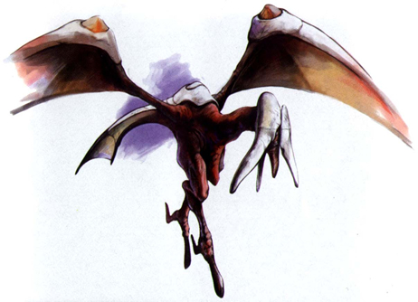

Diary Entry 4: Above the Excavation Site The Discovery of Conana's Nest The dragon and I, left the Excavation Site with revenge on our minds. Before going through the Valley, we decided to go back Above the Excavation site. To take our minds off the tragic event that had just occurred, we decided to have a little fun by having a little target practice. The targets were the Conana birds stationed on the many tall stones, throughout the site. The birds immediately began to fly away and the dragon followed them. To our surprise, the birds led us to a secret cave in the rock face. We had found their nest. The nesting area contained a healing item called Ambrosia and a mysterious item called D Unit 01.  |
|
| Divine
Overview |
1. Lock-on to one of the many stationary birds found on the left path of the (Above Excavation Site). |
2. A flock of birds will fly away, and your dragon will chase after them. |
3. Follow the birds into their secret nest. |
4. You will arrive at the Secret Conana's Nest! |
5. Make sure to get the first D Unit as well as the Ambrosia, which can be found in the two item containers. |